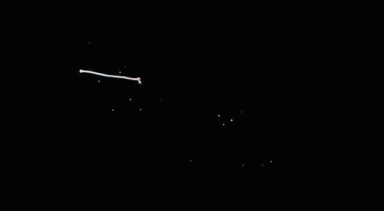

Artificial is Natural
What humans perceive as artificial is truly natural in a universal outlook because everything in the universe is made up of the same material – stardust. The human body, the mind, and its creations are a product of nature. What is unnatural is simply another name for man-made. Constellations are a human construct that we view as an object to believe in. Drawing with the stars will help change the scale of our perception of nature into the scale of the universe. Gender is another construct of humanity. Many say that there is naturally only two genders and anything more is considered unnatural. I say let there be a thousand genders because what makes a gender is what makes a human and what makes a human is nature. Let us believe what we want, let us form the stars into shapes, and let us be who we desire to be. Your drawing is what you believe in and your belief is natural.
2019, Dimensions: n/a, Medium: Digital/HTML
Link to Artwork